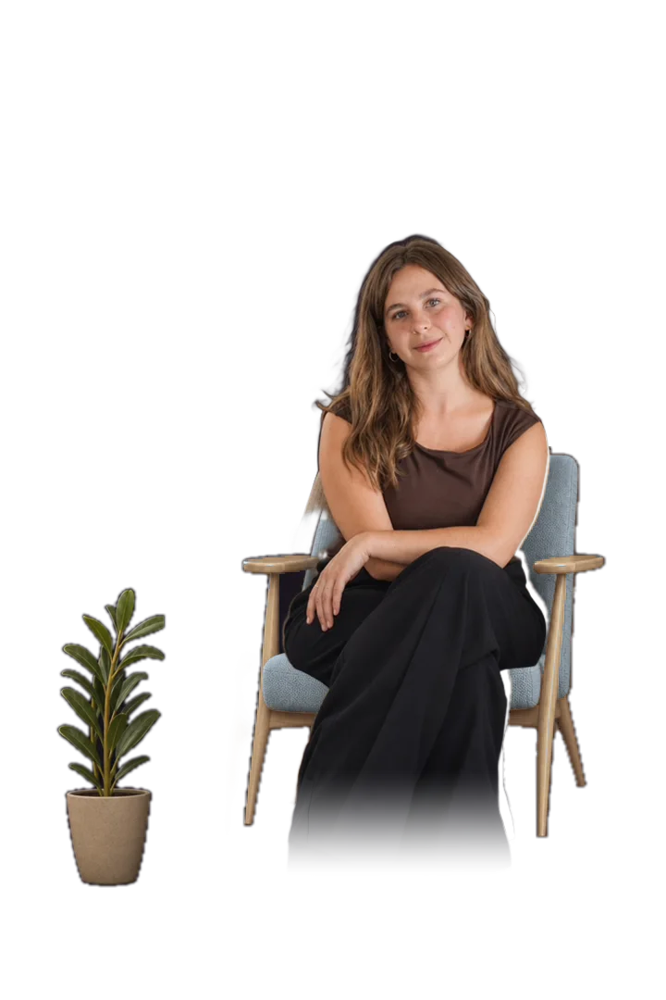
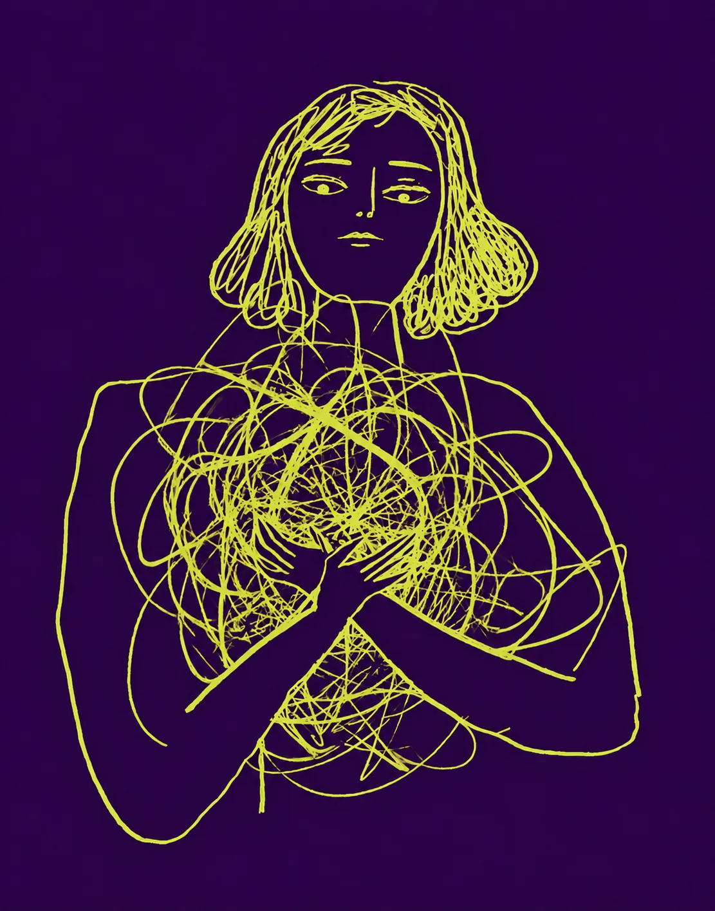
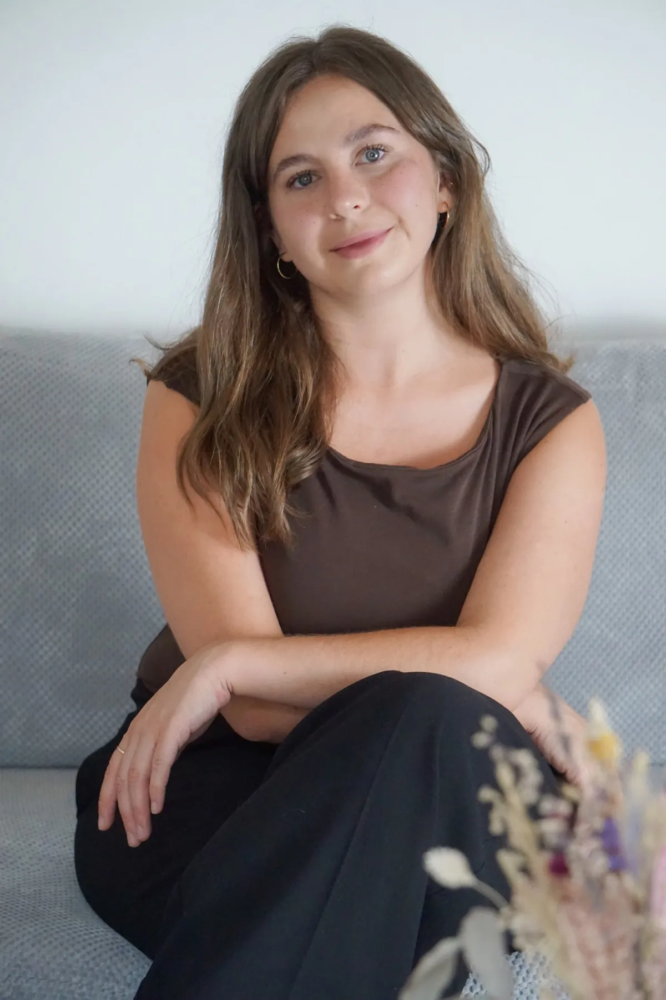

Humanistische Therapie · Personzentrierte Psychotherapie · WienMehr zu mirMein Name ist Melissa Özyurt.Ich begleite Menschen dabei,sich selbst zu begegnenund ihren eigenen Weg zu finden.
Psychotherapeutin in Fachausbildung
unter Lehrsupervision
Raum für Sie.Und alles, wasgerade da ist.
Manchmal wissen wir,
was uns belastet.
Manchmal spüren
wir es nur.

Manchmal spüren wir nur, dass etwas nicht mehr stimmig ist, bestimmte Muster immer wiederkehren oder wir uns selbst ein Stück weit verloren haben.
Psychotherapie kann einen Raum bieten, in dem all das Platz haben darf.
Ihr Leben.
Ihr Erleben.
Ihr eigener Weg.
Ich arbeite nach dem Personzentrierten Ansatz, einer humanistischen Richtung der Psychotherapie nach Carl Rogers. Im Zentrum steht die Überzeugung, dass Menschen die Fähigkeit zur Entwicklung und Veränderung in sich tragen und unter unterstützenden Bedingungen ihren eigenen Weg finden können.
Mir ist wichtig, Menschen nicht auf Symptome, Diagnosen oder einzelne Verhaltensweisen zu reduzieren.
In der therapeutischen Beziehung sind mir Empathie, Wertschätzung, Authentizität und eine Begegnung auf Augenhöhe besonders wichtig.
Ich sehe mich dabei als Begleiterin und als Expertin für den therapeutischen Prozess, nicht als Expertin für Ihr Leben. Ich möchte keine fertigen Lösungen vorgeben, sondern gemeinsam mit Ihnen neugierig darauf schauen, was sich hinter Gefühlen, Verhaltensweisen und wiederkehrenden Mustern zeigt und was Sie für sich brauchen.
Es muss noch
keinen Namen haben.
Ein Raum.
In dem Sie sicher sind.
Ein geschützter Rahmen
Meine psychotherapeutische Arbeit unterliegt der gesetzlichen Verschwiegenheitspflicht. Im Rahmen meiner Fachausbildung wird sie regelmäßig von erfahrenen PsychotherapeutInnen begleitet. Die Lehrsupervision dient der fachlichen Reflexion und Qualitätssicherung. Auch dabei wird die Verschwiegenheit gewahrt: Inhalte aus therapeutischen Gesprächen werden anonymisiert besprochen.

Ich bin Melissa.
Und ich höre zu.
Meine beruflichen Wurzeln liegen in der psychiatrischen Gesundheits- und Krankenpflege.
Ausbildung & Qualifikationen +
- Psychotherapeutisches Fachspezifikum – Personzentrierte Psychotherapie
Vereinigung Rogerianische Psychotherapie (VRP) - Psychotherapeutisches Propädeutikum
Universität Innsbruck - Sonderausbildung in der psychiatrischen Gesundheits- und Krankenpflege
fh gesundheit / AZW Innsbruck - Diplomierte Gesundheits- und Krankenpflegerin (DGKP)
Ausbildungszentrum West für Gesundheitsberufe, Innsbruck - Deeskalationstraining nach ProDeMa®
Durch meine mehrjährige klinische Erfahrung im akutpsychiatrischen Bereich – zunächst in Tirol und seit 2024 in Wien – bringe ich einen reichen Erfahrungsschatz mit und durfte in dieser Zeit viele verschiedene Menschen in belastenden Situationen und Krisen begleiten.
Berufliche Erfahrung +
- Seit 2024
Tätigkeit auf einer akutpsychiatrischen Abteilung in Wien - 2019–2024
Tätigkeit im psychiatrischen Bereich in Tirol - Im Rahmen der Ausbildungen
Praktische Tätigkeiten und Praktika in unterschiedlichen Bereichen der psychiatrischen und psychosozialen Versorgung
Keine fertigen Lösungen.
Sondern gemeinsam
neugierig sein.
Der erste Schritt:
einander kennenlernen.
Das Erstgespräch bietet uns die Möglichkeit, einander kennenzulernen und zu schauen, ob eine gemeinsame therapeutische Arbeit für Sie passend sein könnte.
Dabei können wir Ihr Anliegen, Ihre Erwartungen und offene Fragen besprechen. Gleichzeitig haben Sie die Möglichkeit, einen Eindruck von mir und meiner Arbeitsweise zu bekommen.
Anschließend können wir gemeinsam entscheiden, ob und in welcher Form eine weitere Zusammenarbeit für Sie passend ist.
Einzeltherapie
Für Erwachsene. Die Dauer der Psychotherapie orientiert sich an Ihrem Anliegen, Ihren Bedürfnissen und den gemeinsam vereinbarten Zielen.
50 Minuten
Pro Therapieeinheit. Die Häufigkeit wird individuell vereinbart, in der Regel wöchentlich oder vierzehntägig.
65 Euro
Pro Therapieeinheit (50 Minuten). Eine Kostenrefundierung durch die gesetzliche Krankenversicherung ist derzeit nicht möglich.
Absageregelung +
Vereinbarte Termine sind verbindlich. Sollten Sie einen Termin nicht wahrnehmen können, bitte ich um eine Absage mindestens 48 Stunden im Voraus. Bei einer späteren Absage oder bei Nichterscheinen wird das Honorar für die vereinbarte Einheit in Rechnung gestellt.
Lassen Sie uns
ins Gespräch kommen.
Ich freue mich über Ihre Kontaktaufnahme.
Erstgespräch anfragen ↗